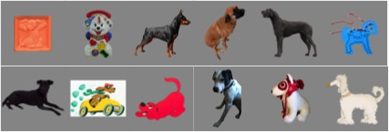
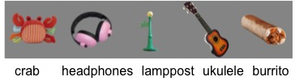

Our Data
Disclaimer: This is our preliminary analysis. We will of course share the more final articles with our families, but first we wanted to give you a peek at what we’re looking at, across all babies in our group, in June 2016.
S tudy of E nvironmental E ffects on D eveloping LING uistic S kills
Object Words: On average, babies heard about 700 object words per day. During the video recordings, they heard about 180 object words per hour.
Babies hear a lot of repetition! Each object word was heard, on average, three to four times per recording.
Speakers: On average, babies heard about five speakers (e.g. mom, brother, toy) per day. During the video recordings, they heard about three per hour.
At six months, our babies do a better job telling apart unrelated words than related words.
|
|
|
We have tested babies on 700 different pictures selected from the most common object words in home recordings. Some of the most popular object words are ball, blocks, and book!
Here are just a few of our 25+ dog, doggy, and puppy pictures!
And here are some of the more unusual words we've tested:
